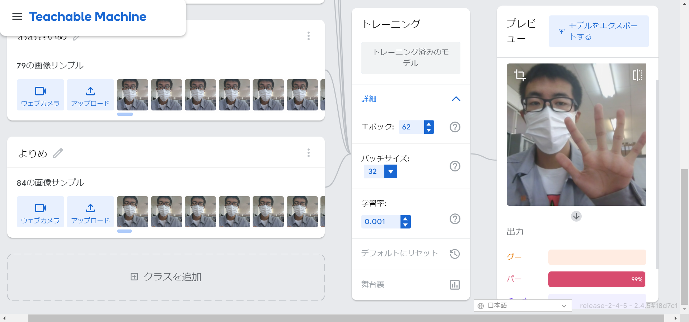

２週目のレポート ： 公大高専１年実習I-1
3B班32番 まだだだだだ
第2週目
2-1 １週目のレポートをHTMLで作る
１週目のレポート
1.内容
1週目のレポートを作成した. 自分のしたことの内容と感想を書いた.
2.感想
短い文章でまとめられるよう努力した. それにより読む量を少なくして, 授業で何をして何を考えたのかすぐに理解できるようになったと考える.
2-2 機械学習体験

1.内容
ウェブカメラで入力した画像から, じゃんけんのグー, チョキ, パー, 何も出していないを判別する機械学習を学んだ.
2.感想
自分の目が大きくなっていたり, 寄り目になっていることも判別できるようにクラスを追加して, サンプルを撮影した. 寄り目を判別することが少し難しかった. また, 目を見開いたら「おおきいめ」のパーセンテージが増え, 何もしていないときはパーと判別された. 学習率が何なのか知りたい.
2-3 VR（バーチャルリアリティー：Virtual Reality）の体験
1.内容
ないようないよう
2.感想
かんそうかんそう